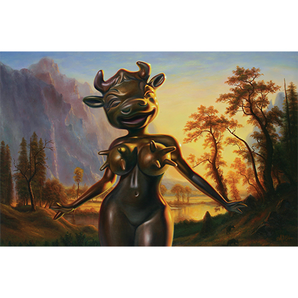

Literature
Ron English, Abject Expressionism: The Art of Ron English (San Francisco: Last Gasp, 2002), p.60. ISBN 978-0867196894.
Ron English, Original Grin: The Art of Ron English (Paris: Cernunnos, 2019), p. 173. ISBN 978-2374950938.

Ron English, Abject Expressionism: The Art of Ron English (San Francisco: Last Gasp, 2002), p.60. ISBN 978-0867196894.
Ron English, Original Grin: The Art of Ron English (Paris: Cernunnos, 2019), p. 173. ISBN 978-2374950938.